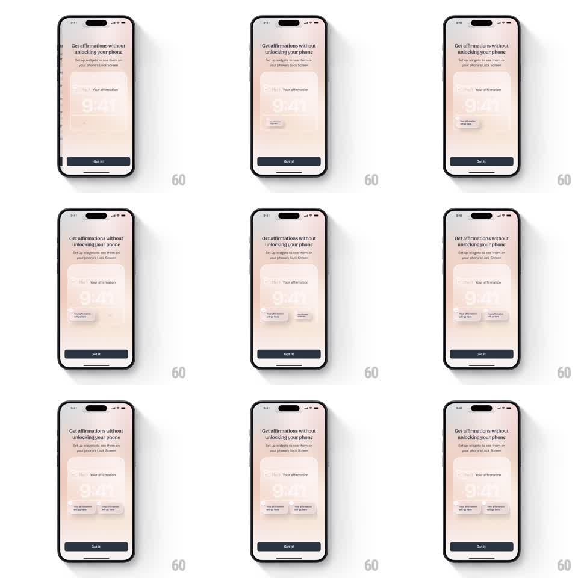

Media
Frame-by-frame

Rebuild this animation 1:1: I am's Lock Screen widget setup - small widget cards fly onto a Lock Screen mock one after another with springy staggers, landing in their slots around the big clock.

Rebuild this animation 1:1: I am's Lock Screen widget setup - small widget cards fly onto a Lock Screen mock one after another with springy staggers, landing in their slots around the big clock. ## Integration Integration: stack-agnostic spec - springs given as stiffness/damping, timed motions as duration + curve; map every value to your framework and animation library of choice. ## Scene Onboarding screen: headline "Get affirmations without unlocking your phone", subcopy "Set up widgets to see them on your phone's Lock Screen", a Lock Screen illustration (top widget slot reading "Your affirmation", a large 9:41 clock), and a dark "Got it!" button. Small widget cards labeled "Your affirmation will go here" animate into the slot positions. ## Motion spec Pattern: staggered spring landings on a Lock Screen mock. - The Lock Screen mock fades in and rises 20pt (400ms, ease-out). - The top widget card slides down from above the mock into the top slot (spring ~280/18, 500ms) - slight overshoot settling into place. - The bottom widget cards (two small rounded cards) fly in from the lower-left and lower-right (spring ~280/16, 60ms apart), each with a slight rotation (+-6deg) that settles to 0 on landing. - Each landing fires a tiny scale bounce on the target slot (1 -> 1.05 -> 1, 200ms) and a soft opacity flash. - The sequence loops with a 1.2s pause: cards dissolve (fade 300ms) and the mock resets for the next pass. ## Calibration - Cards land exactly on the Lock Screen widget slots - the demo is instructional, alignment is the message. - Stagger timing is tight (60-100ms) so the cascade reads as one gesture, not separate events. ## Reduced motion Cards fade into their slots (300ms) with no travel. ## Don't miss - The 9:41 clock and wallpaper stay static; only the widgets move. - Keep the cards legible during flight - no motion blur, no scaling below 0.6.